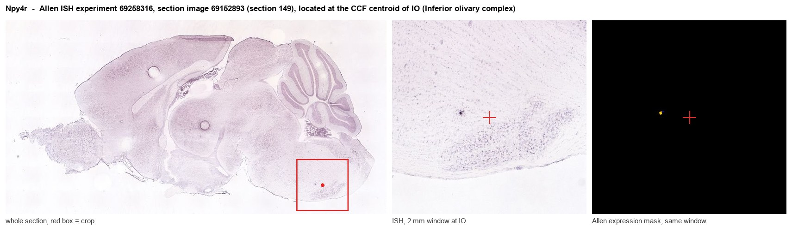
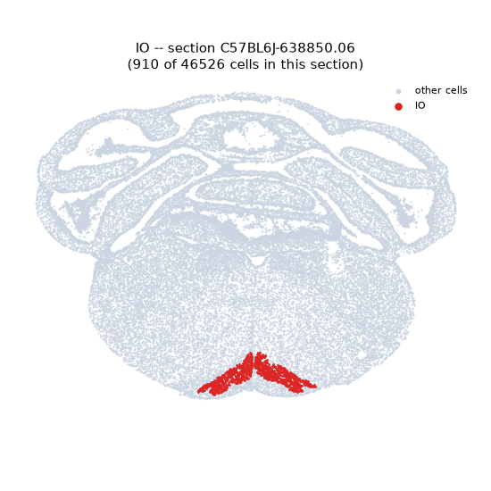
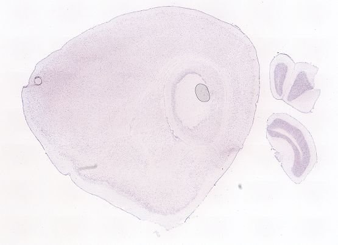
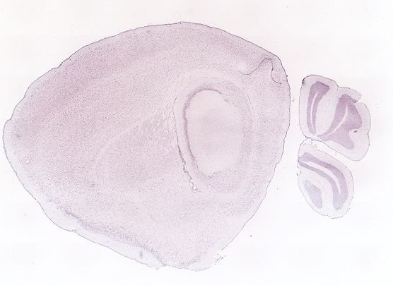
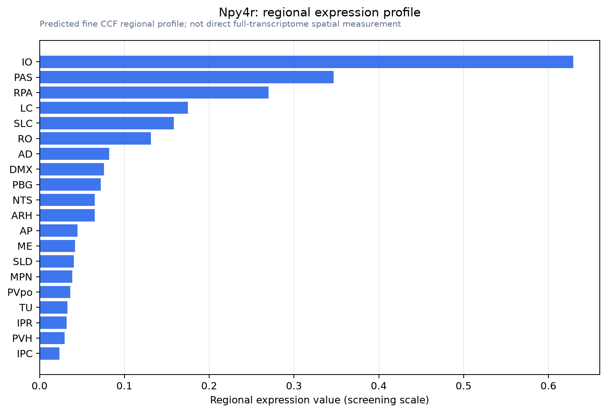

Npy4r
Neuropeptide Y receptor type 4 (NPY4-R) (NPYR-D) (Pancreatic polypeptide receptor 1) (PP1)
Spatial tier: STRICT_EXCLUSIVE · Class: GPCR · Top region: IO (Inferior olivary complex) · Positive regions: 6/554
52.0Discovery Score
43.6Targetability Score
CEvidence grade C
What this means: Npy4r: predicted fine-region profile is strict-exclusive, with 6 positive regions out of 554 (limit 12); direct spatial validation is required.
Function in IO: evidence, prediction, innovation
- Gene function
- Npy4r encodes the Y4 receptor, a Gi/o-coupled GPCR of the neuropeptide Y receptor family. Its preferred ligand is pancreatic polypeptide (PP), with lower affinity for NPY and PYY; activation lowers cAMP and typically inhibits neuronal firing and transmitter release. Peripherally it mediates PP satiety signalling in gut, pancreas and vagal/brainstem circuits.
- Region function
- The inferior olivary complex generates climbing-fibre input to the cerebellum, encoding sensorimotor error and timing signals for motor coordination and learning.
- Published in this region
- inferred No region-specific literature found. The closest evidence is that central Y4 receptors are functional on identified brainstem/hypothalamic neurons, e.g. Campbell et al. 2003 showed orexin neurons express a functional PP-responsive Y4 receptor, and Parker et al. 1998 documented Y4 transcript in discrete CNS regions; Tasan et al. 2009 reported that Y4 knockout mice show increased novelty-induced motor activity and reduced depression-like behaviour, implying central Y4 actions on motor output.
- Predicted function
- Prediction: If Y4 is expressed on olivary principal neurons, PP or PYY acting through Gi/o would hyperpolarize them, suppress subthreshold oscillations and lower complex-spike rate, coupling visceral/metabolic state to climbing-fibre drive. Olivary Npy4r deletion or local antagonism should shift complex-spike frequency and impair fine motor adaptation selectively during metabolic challenge (fasting, refeeding). Chemogenetic silencing of Npy4r-positive olivary neurons would be expected to produce subregion-specific ataxia-like deficits rather than global motor loss.
- Innovation
- ★★★★★ 5/5 Y4 signalling in the inferior olive is essentially unstudied despite the olive being a tractable, functionally central nucleus.
- Tools
- Npy4r global knockout mice (used by Tasan et al. 2009), conditional Npy4r-floxed alleles from the Herzog lab, peptide agonists PP and [cPP] analogues, mixed Y4 agonist/Y1 antagonist 1229U91 (GW1229); no validated Npy4r-Cre line or reliable antibody known.
- References
Direct evidence located at the region

Allen ISH experiment 69258316, section image 69152893 (section 149): the section that contains the CCF centroid of Inferior olivary complex according to the Allen image-to-atlas alignment (reference_to_image), with a 2 mm window around that point. Left: whole section, red box = window. Middle: ISH signal. Right: Allen's expression-mask view of the same window. open this image in the Allen viewer
Look it up yourself: Allen Mouse Brain ISH for Npy4rAllen reference atlas: IO (structure 83)ABC Atlas MERFISH viewer(in the ABC Atlas choose dataset MERFISH-C57BL6J-638850-CCF, colour cells by gene "Npy4r" or by parcellation_substructure "IO")All genes confined to IO + 3-D brain
Direct spatial evidence
MERFISH REGION LOCATOR

DIRECT ALLEN ISH

DIRECT ALLEN ISH

Regional expression figure

Predicted WMB × fine-CCF profile; not direct full-transcriptome spatial measurement.
Spatial profile
Evidence and specificity
- Evidence status
- PREDICTED_FINE
- Direct sources
- None; predicted localization only
- Exclusive threshold
- 12 positive regions out of 554
- Spatial specificity
- 0.458
- Top-region fraction
- 0.208
- Filter status
- PASS
Interpretation limits
- Cell-type-to-region projection is imputed expression, not direct spatial measurement.
- Adult reference atlases do not establish stability across age, sex, strain, state, or disease.
- Transcript abundance does not guarantee protein abundance or genetic-tool performance.